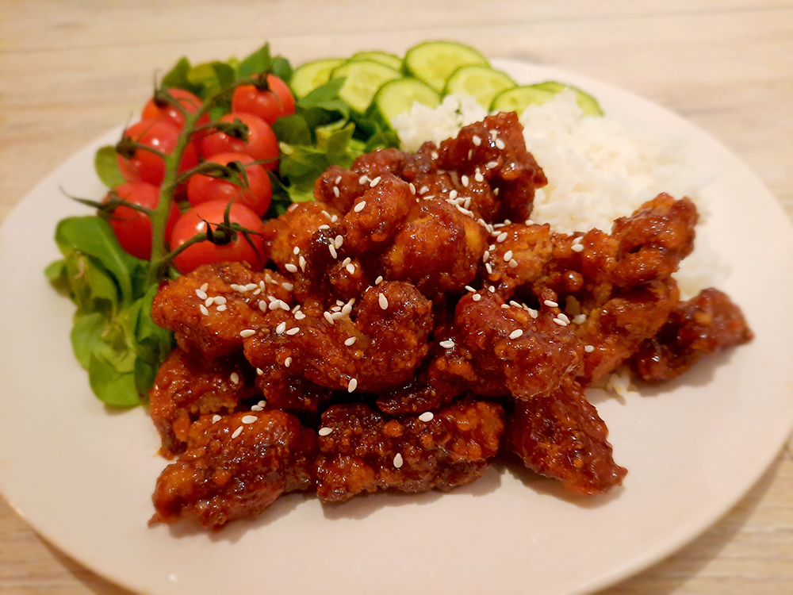

coq au vin

griekse vega gyros wraps

kip in de hoed

avocado salade

amerikaanse caesar salade

italiaanse caponata

salade met gegrilde ananas

koreaanse bibimbap

falafelwrap

biefstuk met chimichurri & gegrilde groenten

bieten carpaccio

kapsalon

koreaanse kip
Dakgangjeong wordt dit gerecht wel eens genoemd en betekent iets als Koreaanse gefrituurde kip. Dit gerecht is lekker als snack maar ook samen met wat rijst en een salade. Vaak wordt er rijstwijn gebruikt in dit recept maar je kan ook sherry gebruiken.

Bereidingsduur: 60 minuten
Aantal personen: 2
Ingrediënten:
350 gram kipdijfilet
2 theelepels knoflookpoeder
2 theelepels gemberpoeder
5 eetlepels sherry
60 gram maizena
1 eetlepel gochujang pasta of saus
1 eetlepel sojasaus
2 eetlepels bruine suiker
2 eetlepels wittewijnazijn
3 eetlepels agavesiroop
1 eetlepel honing
naar smaak peper en zout
2 handjes sesamzaadjes
(frituur) olie
optioneel rijst
optioneel cherry tomaatjes
optioneel komkommer
optioneel sla
350 gram kipdijfilet
2 theelepels knoflookpoeder
2 theelepels gemberpoeder
5 eetlepels sherry
60 gram maizena
1 eetlepel gochujang pasta of saus
1 eetlepel sojasaus
2 eetlepels bruine suiker
2 eetlepels wittewijnazijn
3 eetlepels agavesiroop
1 eetlepel honing
naar smaak peper en zout
2 handjes sesamzaadjes
(frituur) olie
optioneel rijst
optioneel cherry tomaatjes
optioneel komkommer
optioneel sla
Instructies:
1. Snijd de kipdijfilet in kleinere stukken en meng met 1 tl knoflookpoeder, 1 tl gemberpoeder, 3 EL sherry of rijstwijn en eventueel wat zout en peper in een kom. Laat deze marinade een half uurtje staan.
2. Tijd om de saus te maken. Meng in een pan de gochujang saus, sojasaus, bruine suiker, 2 EL sherry, wittewijnazijn, agavesiroop, honing, 1 tl knoflookpoeder en 1 tl gemberpoeder. Verwarm de pan en laat dit een paar minuutjes bubbelen tot de saus iets dikker wordt. Roer regelmatig. Laat afkoelen.
3. Verwarm olie in een (frituur) pan tot 180 graden. Meng de kip met de maizena en zorg dat de kip hiermee goed bedekt is.
4. Zorg dat de olie goed warm is en frituur in porties de stukjes kip tot deze goudbruin zijn. Dit duurt een paar minuutjes. Laat deze daarna uitlekken op keukenpapier.
5. Verwarm weer even de saus en meng de gefrituurde hier doorheen zodat de saus er goed op zit.
6. Garneer de kip met sesamzaadjes en serveer als snacks of met rijst en salade.
1. Snijd de kipdijfilet in kleinere stukken en meng met 1 tl knoflookpoeder, 1 tl gemberpoeder, 3 EL sherry of rijstwijn en eventueel wat zout en peper in een kom. Laat deze marinade een half uurtje staan.
2. Tijd om de saus te maken. Meng in een pan de gochujang saus, sojasaus, bruine suiker, 2 EL sherry, wittewijnazijn, agavesiroop, honing, 1 tl knoflookpoeder en 1 tl gemberpoeder. Verwarm de pan en laat dit een paar minuutjes bubbelen tot de saus iets dikker wordt. Roer regelmatig. Laat afkoelen.
3. Verwarm olie in een (frituur) pan tot 180 graden. Meng de kip met de maizena en zorg dat de kip hiermee goed bedekt is.
4. Zorg dat de olie goed warm is en frituur in porties de stukjes kip tot deze goudbruin zijn. Dit duurt een paar minuutjes. Laat deze daarna uitlekken op keukenpapier.
5. Verwarm weer even de saus en meng de gefrituurde hier doorheen zodat de saus er goed op zit.
6. Garneer de kip met sesamzaadjes en serveer als snacks of met rijst en salade.